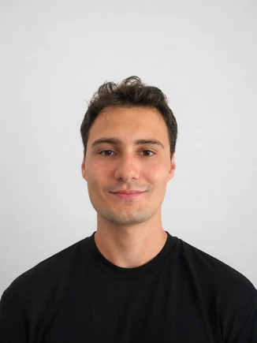

I am an Istanbul-based interior designer exploring how material, light and spatial composition shape experience. My work spans cultural, retail and hospitality environments, alongside an interest in collectible objects.
LinkedIn — q.me-qr.com/dhlhrgz8
Behance — q.me-qr.com/hov3la8e